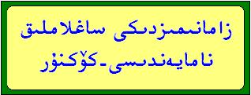
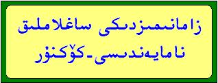

ئالدىنقى يازما
ئالدىنقى يازما كېيىنكى يازما
كېيىنكى يازما
كۆكنۇر يۇقۇرى پەن-تېخنىكا شىركىتى ئىشلىگەن مەھسۇلاتلار تونۇشتۇرلىشى
ئاپتور:Birzat ۋاقتى:2010-07-14


شىجاڭ كۆكنۇر يۇقىرى پەن – تېخنىكا ئېچىش ھەسسىدارلىق شىركىتى
ناۋاتتەك داۋا – چۈچۈك شىكىرى
بوۋاقلاردىكى سېرىقلىقنى ئالىدۇ. چۈچۈكنى ھەيدەيدۇ.
قان كۆپەيتىپ ماغدۇر پەيدا قىلىدۇ، ئۇسسۇزلۇقنى باسىدۇ.
يەڭگىگەن ئانىنىڭ سوغۇق تەرلىشى ۋە قەۋزىيەتكە مەنپەئەت قىلىدۇ.
تېنى ئاجىز، ياشانغان كىشىلەرنىڭ ئىچىنى يىنىك ھەيدەشكە بەك ماس كېلىدۇ.
ئۇستىقۇددۇس شەربىتى – كارى باش ئوت ئامپۇلى
غەيرى تەبىئىي ۋە بەلغەمدىن بولغان ساقسىز باشقا پايدا قىلىدۇ.
نېرۋا ئاجىزلىقنى ياخشىلايدۇ ۋە نېرۋا ئاجىزلىقتىن بولغان ئۇيقۇسىزلىقنى ئوڭشايدۇ.
نېرۋا خاراكتېرلىك يۈرەككە مەنپەئەت قىلىدۇ.
مالىخولىيەنى تېنجىتىدۇ.
مەزى بېزى داۋاسى – مەزى بېزى ئامپۇلى
مەزى بېزى ياللۇغى، مەزى بېزى چوڭىيىشىغا مەنپەئەت قىلىدۇ.
توقۇلما ۋە قان-تومۇرلاردىكى سەۋدا خىلىتىنى ھەيدەيدۇ. جوزامغا داۋا بولىدۇ.
مېڭە ۋە جىگەر قان-تومۇرلىرىنىڭ قېتىشىشىغا مەنپەئەت قىلىدۇ، مېڭە تومۇرىنى ئاچىدۇ.
ئېلىشقاڭغۇلۇق ۋە سوغۇقتىن بولغان باش ئاغرىقىنى مۇئەييەن دەرىجىدە كېسىدۇ.
قوساققا سۇ چۈشۈكە بېرىلىدۇ.
يۆتەل داۋاسى – شىپايى يۆتەل
بالىلار ۋە چوڭلاردىكى يۆتەلگە مەنپەئەت قىلىدۇ.
كانايدىكى ياللۇغلارنى قايتۇرىدۇ.
بالىلاردىكى كۆكيۆتەلنى توختىتىدۇ.
ساپ ئۆسۈملۈك جەۋھىرى بولۇپ ئەكىس تەسىرى يوق
كاتتا مېغىز – كاتتا لوبوب
پەي ۋە نېرۋىلارنى كۈچلەندۈرۈپ، باھنى قوزغايدۇ. كۆڭۈلگە خوشلۇق كەلتۈرىدۇ.
بۆرەكنى كۈچەيتىپ، قىزىتىدۇ، مەنى كۆپەيتىدۇ. يۈرەك، مېڭىنى كۈچلەندۈرىدۇ.
رەڭگى روھىنى ياخشىلايدۇ.
جاننىڭ لالىسى جانلالە
ئاياللار ياللۇغ قايتۇرۇش تابلىتى (كۆپۈكلەنمىسى)
تەسىرى: 1. جانلالە- يىرىڭلاتقۇچى شارچە باكتىرىيە، ئۈچەيتدەك جايلاردا بولىدىغان كېسەل پەيدا قىلغۇچى باكتېرىيىنى كۈچلۈك تورمۇزلايدۇ، زەمبۇرۇغلاردىن بولغان ياللۇغلارنى ياندۇرىدۇ، شۇنىڭ بىلەن سېسىق پۇراش، جىنسىي يول ئاغرىش، قىچىشىش، چىمىلداش، جىنسىي يولدىن سېرىق ياكى يېشىل نەرسىلەر كېلىش، ئاق خۇن كۆپىيىش قاتارلىقلارنى تۈپ ئالامەت قىلغان ئاياللار ياللۇغ كېسەللىكلىرىگە داۋا بولىدۇ.
2. جانلالە ئەۋۋەلقى دەرىجىدە ئىسسىقلىق دورا بولۇپ، تەبىئىتىدىكى قۇرۇتۇش رولى ئارقىلىق موسكۇللارنى قورۇيدۇ. ئوفىئنەتنىڭ ئالدىنى ئالىدۇ، توسالغۇلارنى ئېچىپ ئەتتىكى ئارتۇقچە مۇنەك ۋە مودۇلارنى يوقىتىدۇ، توقۇلمىلارنى ساغلاملاشتۇرىدۇ، يەرلىك ئورۇننىڭ تەبىئىيىتىنى (ئىممونىت كۈچىنى)، ئەزادىكى ساغلام روھىنى ئەسلىگە كەلتۈرىدۇ، غەيرى پۇراقنى يوقىتىپ، خۇشپۇراق قىلىدۇ، كىشىنى سەگىتىدۇ.
3. جانلالە ئۆزىنىڭ پۇرىقى ۋە كۆپۈكلىنىشى بىلەن بالياتقۇنى بۇسلاپ بالىياتقۇنىڭ سېزىملىرىنى ئاچىدۇ، بالياتقۇنىڭ ئۆزىدىكى يات ۋە بۇزۇق نەرشىلەرنى تازىلىشىغا ياردەم بېرىدۇ.
تېنىڭىزگە تېتىكلىك، پۇت قولىڭىزغا ماغدۇر، زېھنىڭىزگە ئوچۇقلۇق، بالىڭىزغا كۈچ قۇۋۋەت ئاتا قىلغۇچى پاك ھايات مەدەتچىسى : شىپايى كالىتسىي ئامپۇلى
ئەنئەنىۋىي تىبابىتىمىزدە ئىشلىتىپ كېلىۋاتقان تەبىئىي دورىلاردىن ياسالغان بولۇپ ھېچقانداق ئەكس تەسىرى يوق، ئەقىلنى بۇلغايدىغان ناپاك نەرسىلەر مۇتلەق ئارىلاشمىغان. تاماقتىن كېيىن ئىېچىلىدۇ، غىزانى ھەزىم قىلۇرىدۇ، قورساق ئېسىلىش،قورساق غولدۇرلاشقا مەنپەئەت قىلىدۇ،ئاشقازاننى قۇۋۋەتلەيدۇ، ھاردۇق چىقىرىدۇ.
تەبئىي قۇۋۋەتنى ئويغۇتۇپ ئىممۇنىتىت كۈچىنى ئاشۇرىدۇ، سېزىملەرنىڭ تۇتۇقلىقىنى، بولۇپمۇ پۇراق، تەم سېزىمىنى ئوڭشايدۇ، زېھىننى ئاچىدۇ، كەمتۈك سەۋدا سەۋەبلىك ئەسەپلەرنىڭ تويىنالماي چارچىشىدىن ھېس ۋە موسكۇللارنىڭ ئاسانلا تەسىرگە ئۇچراپ پۇت قوللار تارتىشىدىغان، چۆچۈيدىغان ئەھۋاللارغا مەنپەئەت قىلىدۇ، چېچىلاڭغۇلۇقنى پەسەيتىدۇ. رەئىس ئەزالارنى قۇۋۋەتلەپ، ماغدۇرسىزلىق، پۇت قوللار ئېغىرلىشىش،ئاغرىش، ئۇنۇتقاقلىق ئەھۋاللىرىغا پايدا قىلىدۇ.
سەۋدانىڭ قىيامى كالتىسىي سەۋەبلىك مۇقامىغا يىتەلمەي بۇنىڭ تەسىرى يۈرەككە يەتكەندە كېلىپ چىقىدىغان يۈرەك رېتىمى بۇزۇلۇش، يۈرەك سانجىقى، قان قېيىش يۈرەكنىڭ كۈچسىزلىكى سەۋەپلىك پەيدا بولغان تۈرلۈك بىنورماللىققا مەنپەئەت قىلىدۇ، بالىلارنىڭ ئۇستىخىنىنى چوڭايتىدۇ، مۇستەھكەم قىلىدۇ، خاتىرە كۈچىنى ئاشۇرىدۇ. چوڭلاردىكى ئۇستىخان شالاڭلاش،پۇت-قول ۋە سۆڭەك سانجىپ ئاغرىشلارنى قالدۇرىدۇ.
كىمدە بار زىققا، كىمدە دەم سىقىش مانا مەن داۋاسى شىپايى نەپەس بۇ مەھسۇلات كانيىدا زىيادە سىزىمچانلىقى بار، چېنىقىش،سوغۇق ھاۋا، ئىستۈتەك، غەيرى پۇرق،ھور، چاڭ-توزاڭ ۋەھاكازالارنىڭ تەسىرى بىلەن تۇرۇپلا دېمى سىقىلىدىغان كىشىلەرنىڭ ئىشلىتىشىگە باپ كېلىدۇ.
دەم سىقىلىش ھەققىدىكى ئەڭ يېڭى تەتقىقات نەتىجىلىرى بىلەن تېبابەت مىراسلىرىمىزنىڭ ئەۋزەللىكى بىرلەشتۈرۈلگەن،باشقا ئەكىس تەسىرى يوق.
دىئابىتلارنىڭ ئەنگۈشتىرى—شىپايى دېئابىت كاپسۇلى
دېئابىتنىڭ كېسەللىك ئالامەتلىرىنى پەسەيتىدۇ، قان قەنتىنى چۈشۈرۈپ نورمال دائىرىدە تۇرغۇزىدۇ، قان بېسىمىنى چۈشۈرىدۇ.
ئۈچەي ماسارتقا ئەتراپىدىكى ماددا ئالمىشىشنى ياخشىلايدۇ، مۇسكۇلنى چىڭىتىپ سىرغىپ خوراشنى ئازايتىدۇ،تەشنالىقنى باسىدۇ، نېرۋىنى پەسەيتىدۇ، بۆرەك،جىگەر، ئاشقازان ئاستى بېزى قاتارلىق ھالسىرىغان ئەزالارنى كۈچەيتىدۇ.
ئاشقازان ئاستى بېزىدىكى چاتاقنى ئوڭشاشقا كۈچەيدۇ، ئاشقازان ئاستى بېزى سۇيۇقلۇقىنىڭ سان ۋە سۈپىتىنى ئۆستۈرىدۇ.
خېمىر گاۋزىبان ئاساسىدىكى قان بېسىم داۋاسى- قان بېسىم تابىلىتى
قان بېسىمنى چۈشۈرىدۇ.
رەئىس ئەزالارنى قۇۋۋەتلەيدۇ، نېرۋىنى تىنىچلاندۇرىدۇ.
يۈرەك چەلەڭگىرەش،قان – تومۇر توسۇلۇشقا مەنپەئەت قىلىدۇ.
داۋا بېشى-- ئاشقازان تابىلىتى
ئاشقازان ياللۇغىغا مەنپەئەت قىلىدۇ. ئاشقازان ۋە ئون ئىككى بارماق ئۈچەي يارىسىنى ياخشىلايدۇ.
ئاشقازاندىن ئاچچىق سۇ يېنىش،قۇرساق ئېسىلىشنى دەرھال باسىدۇ. ئاشقازاننى كۈچەيتىدۇ، ھەزىم بۇزۇلۇشنى ئوڭشايدۇ.
ئادەت نورماللىقنىڭ شىپاسى شىپايى ئادەت ئامپۇلى
ئادەت توختاپ قىلىشنى ئوڭشايدۇ. توسالغۇلارنى ئېچىپ، جىگەر ۋە ئاشقازاننى كۈچەيتىدۇ.
روھىي جەھەتتىكى خاپىغانلىق ۋە چاچقۇنلىقىنى باسىدۇ.
قان ئازلىق داۋاسى- كۆپقان ئامپۇلى
قان تۇلۇقلاپ قان ئازلىقنى تۈگىتىدۇ،باھنى كۈچەيتىدۇ. چىراينى ئۇزلاشتۇرۇپ مىزاجنى تەڭشەيدۇ.
ئاشقازان ساڭگىلاشنى ياخشىلايدۇ. يەلدىن بولغان بوۋاسىرنى يوقىتىدۇ.
قان ئازلىق تۈپەيلى كۆز ئالمىسى بوششىتىن پەيدا بولغان يىراقنى كۆرەلمەسلىكنى تىزگىنلەيدۇ.
يەلدىن بولغان ساقسىزلىقنىڭ داۋاسى –يەل كەسكە
تەبىئەتنى بوشتۇپ،جاھىل قەۋزىيەتنى يوقىتدۇ. خام سىمىزلىكنى ئوڭشاپ ئورۇقلىتىدۇ. بوغۇم ئاغرىقلىرىنى، نىقرەسىنى كېسىدۇ. مېيى بىلەن ئىشلەتكەندە، سۆڭەك ئۆسۇكچىلىرىنى يوق قىلىدۇ.
يۈرەك داۋاسى - شىپايى زەمزەم
يۈرەك ئۇدۇلىدا ئېغىزلىق باردەك ھېس قىلىدىغان،نىمىگىدۇر تىىت-تىت بولىدىغان، كۆكرەك ساھەسىدە ئارامسىزلىق بار، بۇ ئازامسىزلىق سول مورە، سول بىلەكنىڭ پۇكىلىدىغان تەرىپى، بويۇن ياكى قۇرساقنىڭ ئۈستۈنكى قىسىمىغا سوزۇلغان كىشىلەرگە مەنپەئەت قىلىدۇ.
تاجىسىمان ئارتىرىيە مەنبەلىك يۈرەك ئارامسىزلىق ۋە يۈرەك موسكولىغا قان يېتىشمەسلىكنى ياخشىلايدۇ.
قان- تومۇر قېتىشىش، يۈرەك ھەركىتىنىڭ رېتىمسىزلىقى، يۈرەك سانجىقىغا ئارام بېرىدۇ.
ئۆزىمىزنىڭ پاك كالتىسىيىسى
شىپايى كالتىسىي دەملىمىسى
ئەنئەنىۋى تىبابىتىمىزدە ئىشلىتىپ كىلىۋاتقان تەبئىي دورىلاردىن ياسالغان بولۇپ ئەكىس تەسىرى يوق، ئەقىلنى بۇلغايدىغان ناپاك نەرسىلەر مۇتلەق ئارلاشمىغان.
كالتىسىينىڭ كەملىكىدىن بولغان يۈرەك رېتىمسىزلىقى،يۈرەك سانجىقى، قان قېيىش، يۈرەك ئاجىزلىقى ۋەكازالارغا تەسىرى ناھايىتى ياخشى.
ھەزىمنى ياخشىلايدۇ، جىگەر،تالدىكى يەللەرنى تارقىتىدۇ، جىگەرنى ماي قاپلاشقا مەنپەئەت قىلىدۇ.
كەمتۈك سەۋدا سەۋەبلىك ئەسەپلەرنىڭ تويىنالماي چارچىشىدىن ھېس ۋە موسكۇللارئاسانلا تەسىرگە ئۇچراپ پۇت- قوللار تارتىشىدىغان، چۆچىيدىغان ئەھۋاللارغا مەنپەئەت قىلىدۇ، چېچىلاڭغۇلۇقنى پەسەيتىدۇ. بوۋاقلاردىكى قاغىشلىقنى يوقىتىدۇ. بالىلارنىڭ ئۇستىخىنىنى چوڭايتىدۇ. چوڭلاردىكى ئۇستىخان شالاڭلاش، پۇت- قول ۋە سۆڭەك سانجىپ ئاغرىشلارنى قالدۇرىدۇ.
ساغلاملىقنىڭ باش بۇرنى- ساز قان دەملىمىسى
مېڭە، تال، جىگەردىكى توسالغۇلارنى ئېچىپ، چوڭ-كىچىك تەرەتنى راۋانلاشتۇرىدۇ.
بەدەندىكى بۇزۇق نەرسىلەرنى چىقىرىپ قاننى تازىلاديدۇ، بۇنداق ئىچكى پاكىزلىق سىزگە مۇنچىدىن چىققاندىكى يەڭگىللىكنى ئاتا قىلىدۇ.
تومۇردىكى چۆكۈندىلەر قاننىڭ يېپىشقاق ۋە قويۇقلۇقى سەۋەبلىك بولىدىغان باش ئاغرىقى، كۆز ئاغرىقى، نېرۋا كېسەللىكلىرى، تېرە كېسەللىىكلىرىگە مەنپەئەت قىلىدۇ.
بىر مەزگىل ئىىچسىڭىز ئۇششاق كېسەللىكلەردىن خالى بولىسىز.
قەرەللىك ھالدا ئىچىپ تۇرسىڭىز گويا قەرەللىك مۇنچىغا كىرگەندەك بولۇپ ئىچىكى بەدەننىڭ پاكىزلىقىنىڭ پايدىسىنى كۆرسىز.
ھەپتىدە بىر سۈرگە، ئايدا بىر كۆچە
تەرياقى زۇكام كاپسۇلى زۇكام شىپاسى
بىر كۈندىلا ئۈنۈمىنى كۆرىسىز.
زۇكام بىلەن پەيدا بولغان باشنىڭ ئېغىرلىقىنى دەرھال قالدۇرىدۇ.
باش ۋە تومۇرلاردىكى زۇكاملاتقۇچى ئامىللارنى تازىلاپ بەدەننىڭ زۇكامغا بولغان قارشىلىق كۈچىنى ئاشۇرىدۇ.
بىرخىل مۇھىتتا نەزلىنى توختىتىدۇ، سوغۇققا چىققاندا تەسىرچان ئامىللارنىڭ سرتقا ئېقىشىغا ئىمكانىيەت قالدۇرىدۇ، شۇنىڭ بىلەن بەدەندىن ھەيدىلىشكە تىگىشلىك نەرسە دورا سەۋەبلىك توختاپ قالمايدۇ.
ساپ ئۆسۈملۈك جەۋھىرى بولۇپ، ئەكىس تەسىرى يوق.
كۆكنۇر پەن- تېخنىكىسى
شىركەت ئادرىسى : خەلقئارا چوڭ بازار پىيادىلەر كوچىسى
شىجاڭ كۆكنۇر يۇقىرى پەن – تېخنىكا ئېچىش ھەسسىدارلىق شىركىتى
قەشقەردىكى باش ۋاكالەتچىلىك ئورنى - قەشقەر شەھەر قوناق بازىرى يولى دوقمۇشى - ۋالى مەھكىمە بىناسى يان تەرەپتىكى كۆكنۇر پەن-تېخنىكا دۇكىنى.
مەسلەھەت سوراش تېلفۇنى: 13119981025
80خالتا تېبابەت دۇكىنى
قەشقەر شەھەر ھېيتگاھ كاتتا بازىرى 7- رايون A بۆلەك 018-نۇمۇر (2-قەۋەت) يەنى ھېيتگاھ مەسچىت ئالدى مەيدان نوربېشى تەرەپ گۈمبەز يېنىدىكى << نوربېشى ئاشخانىسى >> نىڭ ئۈستىنكى قەۋىتىدە. ھېيتگاھ مەيداندىكى چوڭ تېلۋىزوردىن 50 مېتىر نېرىدا.
تېلفۇن: 0998-2820877
يانفۇن:13565662787 ، 15309982787
زامانىمىزدىكى ساغلاملىق نامايەندىسى-كۆكنۇر

ناۋاتتەك داۋا – چۈچۈك شىكىرى
بوۋاقلاردىكى سېرىقلىقنى ئالىدۇ. چۈچۈكنى ھەيدەيدۇ.
قان كۆپەيتىپ ماغدۇر پەيدا قىلىدۇ، ئۇسسۇزلۇقنى باسىدۇ.
يەڭگىگەن ئانىنىڭ سوغۇق تەرلىشى ۋە قەۋزىيەتكە مەنپەئەت قىلىدۇ.
تېنى ئاجىز، ياشانغان كىشىلەرنىڭ ئىچىنى يىنىك ھەيدەشكە بەك ماس كېلىدۇ.
ئۇستىقۇددۇس شەربىتى – كارى باش ئوت ئامپۇلى
غەيرى تەبىئىي ۋە بەلغەمدىن بولغان ساقسىز باشقا پايدا قىلىدۇ.
نېرۋا ئاجىزلىقنى ياخشىلايدۇ ۋە نېرۋا ئاجىزلىقتىن بولغان ئۇيقۇسىزلىقنى ئوڭشايدۇ.
نېرۋا خاراكتېرلىك يۈرەككە مەنپەئەت قىلىدۇ.
مالىخولىيەنى تېنجىتىدۇ.
مەزى بېزى داۋاسى – مەزى بېزى ئامپۇلى
مەزى بېزى ياللۇغى، مەزى بېزى چوڭىيىشىغا مەنپەئەت قىلىدۇ.
توقۇلما ۋە قان-تومۇرلاردىكى سەۋدا خىلىتىنى ھەيدەيدۇ. جوزامغا داۋا بولىدۇ.
مېڭە ۋە جىگەر قان-تومۇرلىرىنىڭ قېتىشىشىغا مەنپەئەت قىلىدۇ، مېڭە تومۇرىنى ئاچىدۇ.
ئېلىشقاڭغۇلۇق ۋە سوغۇقتىن بولغان باش ئاغرىقىنى مۇئەييەن دەرىجىدە كېسىدۇ.
قوساققا سۇ چۈشۈكە بېرىلىدۇ.
يۆتەل داۋاسى – شىپايى يۆتەل
بالىلار ۋە چوڭلاردىكى يۆتەلگە مەنپەئەت قىلىدۇ.
كانايدىكى ياللۇغلارنى قايتۇرىدۇ.
بالىلاردىكى كۆكيۆتەلنى توختىتىدۇ.
ساپ ئۆسۈملۈك جەۋھىرى بولۇپ ئەكىس تەسىرى يوق
كاتتا مېغىز – كاتتا لوبوب
پەي ۋە نېرۋىلارنى كۈچلەندۈرۈپ، باھنى قوزغايدۇ. كۆڭۈلگە خوشلۇق كەلتۈرىدۇ.
بۆرەكنى كۈچەيتىپ، قىزىتىدۇ، مەنى كۆپەيتىدۇ. يۈرەك، مېڭىنى كۈچلەندۈرىدۇ.
رەڭگى روھىنى ياخشىلايدۇ.
جاننىڭ لالىسى جانلالە
ئاياللار ياللۇغ قايتۇرۇش تابلىتى (كۆپۈكلەنمىسى)
تەسىرى: 1. جانلالە- يىرىڭلاتقۇچى شارچە باكتىرىيە، ئۈچەيتدەك جايلاردا بولىدىغان كېسەل پەيدا قىلغۇچى باكتېرىيىنى كۈچلۈك تورمۇزلايدۇ، زەمبۇرۇغلاردىن بولغان ياللۇغلارنى ياندۇرىدۇ، شۇنىڭ بىلەن سېسىق پۇراش، جىنسىي يول ئاغرىش، قىچىشىش، چىمىلداش، جىنسىي يولدىن سېرىق ياكى يېشىل نەرسىلەر كېلىش، ئاق خۇن كۆپىيىش قاتارلىقلارنى تۈپ ئالامەت قىلغان ئاياللار ياللۇغ كېسەللىكلىرىگە داۋا بولىدۇ.
2. جانلالە ئەۋۋەلقى دەرىجىدە ئىسسىقلىق دورا بولۇپ، تەبىئىتىدىكى قۇرۇتۇش رولى ئارقىلىق موسكۇللارنى قورۇيدۇ. ئوفىئنەتنىڭ ئالدىنى ئالىدۇ، توسالغۇلارنى ئېچىپ ئەتتىكى ئارتۇقچە مۇنەك ۋە مودۇلارنى يوقىتىدۇ، توقۇلمىلارنى ساغلاملاشتۇرىدۇ، يەرلىك ئورۇننىڭ تەبىئىيىتىنى (ئىممونىت كۈچىنى)، ئەزادىكى ساغلام روھىنى ئەسلىگە كەلتۈرىدۇ، غەيرى پۇراقنى يوقىتىپ، خۇشپۇراق قىلىدۇ، كىشىنى سەگىتىدۇ.
3. جانلالە ئۆزىنىڭ پۇرىقى ۋە كۆپۈكلىنىشى بىلەن بالياتقۇنى بۇسلاپ بالىياتقۇنىڭ سېزىملىرىنى ئاچىدۇ، بالياتقۇنىڭ ئۆزىدىكى يات ۋە بۇزۇق نەرشىلەرنى تازىلىشىغا ياردەم بېرىدۇ.
تېنىڭىزگە تېتىكلىك، پۇت قولىڭىزغا ماغدۇر، زېھنىڭىزگە ئوچۇقلۇق، بالىڭىزغا كۈچ قۇۋۋەت ئاتا قىلغۇچى پاك ھايات مەدەتچىسى : شىپايى كالىتسىي ئامپۇلى
ئەنئەنىۋىي تىبابىتىمىزدە ئىشلىتىپ كېلىۋاتقان تەبىئىي دورىلاردىن ياسالغان بولۇپ ھېچقانداق ئەكس تەسىرى يوق، ئەقىلنى بۇلغايدىغان ناپاك نەرسىلەر مۇتلەق ئارىلاشمىغان. تاماقتىن كېيىن ئىېچىلىدۇ، غىزانى ھەزىم قىلۇرىدۇ، قورساق ئېسىلىش،قورساق غولدۇرلاشقا مەنپەئەت قىلىدۇ،ئاشقازاننى قۇۋۋەتلەيدۇ، ھاردۇق چىقىرىدۇ.
تەبئىي قۇۋۋەتنى ئويغۇتۇپ ئىممۇنىتىت كۈچىنى ئاشۇرىدۇ، سېزىملەرنىڭ تۇتۇقلىقىنى، بولۇپمۇ پۇراق، تەم سېزىمىنى ئوڭشايدۇ، زېھىننى ئاچىدۇ، كەمتۈك سەۋدا سەۋەبلىك ئەسەپلەرنىڭ تويىنالماي چارچىشىدىن ھېس ۋە موسكۇللارنىڭ ئاسانلا تەسىرگە ئۇچراپ پۇت قوللار تارتىشىدىغان، چۆچۈيدىغان ئەھۋاللارغا مەنپەئەت قىلىدۇ، چېچىلاڭغۇلۇقنى پەسەيتىدۇ. رەئىس ئەزالارنى قۇۋۋەتلەپ، ماغدۇرسىزلىق، پۇت قوللار ئېغىرلىشىش،ئاغرىش، ئۇنۇتقاقلىق ئەھۋاللىرىغا پايدا قىلىدۇ.
سەۋدانىڭ قىيامى كالتىسىي سەۋەبلىك مۇقامىغا يىتەلمەي بۇنىڭ تەسىرى يۈرەككە يەتكەندە كېلىپ چىقىدىغان يۈرەك رېتىمى بۇزۇلۇش، يۈرەك سانجىقى، قان قېيىش يۈرەكنىڭ كۈچسىزلىكى سەۋەپلىك پەيدا بولغان تۈرلۈك بىنورماللىققا مەنپەئەت قىلىدۇ، بالىلارنىڭ ئۇستىخىنىنى چوڭايتىدۇ، مۇستەھكەم قىلىدۇ، خاتىرە كۈچىنى ئاشۇرىدۇ. چوڭلاردىكى ئۇستىخان شالاڭلاش،پۇت-قول ۋە سۆڭەك سانجىپ ئاغرىشلارنى قالدۇرىدۇ.
كىمدە بار زىققا، كىمدە دەم سىقىش مانا مەن داۋاسى شىپايى نەپەس بۇ مەھسۇلات كانيىدا زىيادە سىزىمچانلىقى بار، چېنىقىش،سوغۇق ھاۋا، ئىستۈتەك، غەيرى پۇرق،ھور، چاڭ-توزاڭ ۋەھاكازالارنىڭ تەسىرى بىلەن تۇرۇپلا دېمى سىقىلىدىغان كىشىلەرنىڭ ئىشلىتىشىگە باپ كېلىدۇ.
دەم سىقىلىش ھەققىدىكى ئەڭ يېڭى تەتقىقات نەتىجىلىرى بىلەن تېبابەت مىراسلىرىمىزنىڭ ئەۋزەللىكى بىرلەشتۈرۈلگەن،باشقا ئەكىس تەسىرى يوق.
دىئابىتلارنىڭ ئەنگۈشتىرى—شىپايى دېئابىت كاپسۇلى
دېئابىتنىڭ كېسەللىك ئالامەتلىرىنى پەسەيتىدۇ، قان قەنتىنى چۈشۈرۈپ نورمال دائىرىدە تۇرغۇزىدۇ، قان بېسىمىنى چۈشۈرىدۇ.
ئۈچەي ماسارتقا ئەتراپىدىكى ماددا ئالمىشىشنى ياخشىلايدۇ، مۇسكۇلنى چىڭىتىپ سىرغىپ خوراشنى ئازايتىدۇ،تەشنالىقنى باسىدۇ، نېرۋىنى پەسەيتىدۇ، بۆرەك،جىگەر، ئاشقازان ئاستى بېزى قاتارلىق ھالسىرىغان ئەزالارنى كۈچەيتىدۇ.
ئاشقازان ئاستى بېزىدىكى چاتاقنى ئوڭشاشقا كۈچەيدۇ، ئاشقازان ئاستى بېزى سۇيۇقلۇقىنىڭ سان ۋە سۈپىتىنى ئۆستۈرىدۇ.
خېمىر گاۋزىبان ئاساسىدىكى قان بېسىم داۋاسى- قان بېسىم تابىلىتى
قان بېسىمنى چۈشۈرىدۇ.
رەئىس ئەزالارنى قۇۋۋەتلەيدۇ، نېرۋىنى تىنىچلاندۇرىدۇ.
يۈرەك چەلەڭگىرەش،قان – تومۇر توسۇلۇشقا مەنپەئەت قىلىدۇ.
داۋا بېشى-- ئاشقازان تابىلىتى
ئاشقازان ياللۇغىغا مەنپەئەت قىلىدۇ. ئاشقازان ۋە ئون ئىككى بارماق ئۈچەي يارىسىنى ياخشىلايدۇ.
ئاشقازاندىن ئاچچىق سۇ يېنىش،قۇرساق ئېسىلىشنى دەرھال باسىدۇ. ئاشقازاننى كۈچەيتىدۇ، ھەزىم بۇزۇلۇشنى ئوڭشايدۇ.
ئادەت نورماللىقنىڭ شىپاسى شىپايى ئادەت ئامپۇلى
ئادەت توختاپ قىلىشنى ئوڭشايدۇ. توسالغۇلارنى ئېچىپ، جىگەر ۋە ئاشقازاننى كۈچەيتىدۇ.
روھىي جەھەتتىكى خاپىغانلىق ۋە چاچقۇنلىقىنى باسىدۇ.
قان ئازلىق داۋاسى- كۆپقان ئامپۇلى
قان تۇلۇقلاپ قان ئازلىقنى تۈگىتىدۇ،باھنى كۈچەيتىدۇ. چىراينى ئۇزلاشتۇرۇپ مىزاجنى تەڭشەيدۇ.
ئاشقازان ساڭگىلاشنى ياخشىلايدۇ. يەلدىن بولغان بوۋاسىرنى يوقىتىدۇ.
قان ئازلىق تۈپەيلى كۆز ئالمىسى بوششىتىن پەيدا بولغان يىراقنى كۆرەلمەسلىكنى تىزگىنلەيدۇ.
يەلدىن بولغان ساقسىزلىقنىڭ داۋاسى –يەل كەسكە
تەبىئەتنى بوشتۇپ،جاھىل قەۋزىيەتنى يوقىتدۇ. خام سىمىزلىكنى ئوڭشاپ ئورۇقلىتىدۇ. بوغۇم ئاغرىقلىرىنى، نىقرەسىنى كېسىدۇ. مېيى بىلەن ئىشلەتكەندە، سۆڭەك ئۆسۇكچىلىرىنى يوق قىلىدۇ.
يۈرەك داۋاسى - شىپايى زەمزەم
يۈرەك ئۇدۇلىدا ئېغىزلىق باردەك ھېس قىلىدىغان،نىمىگىدۇر تىىت-تىت بولىدىغان، كۆكرەك ساھەسىدە ئارامسىزلىق بار، بۇ ئازامسىزلىق سول مورە، سول بىلەكنىڭ پۇكىلىدىغان تەرىپى، بويۇن ياكى قۇرساقنىڭ ئۈستۈنكى قىسىمىغا سوزۇلغان كىشىلەرگە مەنپەئەت قىلىدۇ.
تاجىسىمان ئارتىرىيە مەنبەلىك يۈرەك ئارامسىزلىق ۋە يۈرەك موسكولىغا قان يېتىشمەسلىكنى ياخشىلايدۇ.
قان- تومۇر قېتىشىش، يۈرەك ھەركىتىنىڭ رېتىمسىزلىقى، يۈرەك سانجىقىغا ئارام بېرىدۇ.
ئۆزىمىزنىڭ پاك كالتىسىيىسى
شىپايى كالتىسىي دەملىمىسى
ئەنئەنىۋى تىبابىتىمىزدە ئىشلىتىپ كىلىۋاتقان تەبئىي دورىلاردىن ياسالغان بولۇپ ئەكىس تەسىرى يوق، ئەقىلنى بۇلغايدىغان ناپاك نەرسىلەر مۇتلەق ئارلاشمىغان.
كالتىسىينىڭ كەملىكىدىن بولغان يۈرەك رېتىمسىزلىقى،يۈرەك سانجىقى، قان قېيىش، يۈرەك ئاجىزلىقى ۋەكازالارغا تەسىرى ناھايىتى ياخشى.
ھەزىمنى ياخشىلايدۇ، جىگەر،تالدىكى يەللەرنى تارقىتىدۇ، جىگەرنى ماي قاپلاشقا مەنپەئەت قىلىدۇ.
كەمتۈك سەۋدا سەۋەبلىك ئەسەپلەرنىڭ تويىنالماي چارچىشىدىن ھېس ۋە موسكۇللارئاسانلا تەسىرگە ئۇچراپ پۇت- قوللار تارتىشىدىغان، چۆچىيدىغان ئەھۋاللارغا مەنپەئەت قىلىدۇ، چېچىلاڭغۇلۇقنى پەسەيتىدۇ. بوۋاقلاردىكى قاغىشلىقنى يوقىتىدۇ. بالىلارنىڭ ئۇستىخىنىنى چوڭايتىدۇ. چوڭلاردىكى ئۇستىخان شالاڭلاش، پۇت- قول ۋە سۆڭەك سانجىپ ئاغرىشلارنى قالدۇرىدۇ.
ساغلاملىقنىڭ باش بۇرنى- ساز قان دەملىمىسى
مېڭە، تال، جىگەردىكى توسالغۇلارنى ئېچىپ، چوڭ-كىچىك تەرەتنى راۋانلاشتۇرىدۇ.
بەدەندىكى بۇزۇق نەرسىلەرنى چىقىرىپ قاننى تازىلاديدۇ، بۇنداق ئىچكى پاكىزلىق سىزگە مۇنچىدىن چىققاندىكى يەڭگىللىكنى ئاتا قىلىدۇ.
تومۇردىكى چۆكۈندىلەر قاننىڭ يېپىشقاق ۋە قويۇقلۇقى سەۋەبلىك بولىدىغان باش ئاغرىقى، كۆز ئاغرىقى، نېرۋا كېسەللىكلىرى، تېرە كېسەللىىكلىرىگە مەنپەئەت قىلىدۇ.
بىر مەزگىل ئىىچسىڭىز ئۇششاق كېسەللىكلەردىن خالى بولىسىز.
قەرەللىك ھالدا ئىچىپ تۇرسىڭىز گويا قەرەللىك مۇنچىغا كىرگەندەك بولۇپ ئىچىكى بەدەننىڭ پاكىزلىقىنىڭ پايدىسىنى كۆرسىز.
ھەپتىدە بىر سۈرگە، ئايدا بىر كۆچە
تەرياقى زۇكام كاپسۇلى زۇكام شىپاسى
بىر كۈندىلا ئۈنۈمىنى كۆرىسىز.
زۇكام بىلەن پەيدا بولغان باشنىڭ ئېغىرلىقىنى دەرھال قالدۇرىدۇ.
باش ۋە تومۇرلاردىكى زۇكاملاتقۇچى ئامىللارنى تازىلاپ بەدەننىڭ زۇكامغا بولغان قارشىلىق كۈچىنى ئاشۇرىدۇ.
بىرخىل مۇھىتتا نەزلىنى توختىتىدۇ، سوغۇققا چىققاندا تەسىرچان ئامىللارنىڭ سرتقا ئېقىشىغا ئىمكانىيەت قالدۇرىدۇ، شۇنىڭ بىلەن بەدەندىن ھەيدىلىشكە تىگىشلىك نەرسە دورا سەۋەبلىك توختاپ قالمايدۇ.
ساپ ئۆسۈملۈك جەۋھىرى بولۇپ، ئەكىس تەسىرى يوق.
كۆكنۇر پەن- تېخنىكىسى
شىركەت ئادرىسى : خەلقئارا چوڭ بازار پىيادىلەر كوچىسى
شىجاڭ كۆكنۇر يۇقىرى پەن – تېخنىكا ئېچىش ھەسسىدارلىق شىركىتى
قەشقەردىكى باش ۋاكالەتچىلىك ئورنى - قەشقەر شەھەر قوناق بازىرى يولى دوقمۇشى - ۋالى مەھكىمە بىناسى يان تەرەپتىكى كۆكنۇر پەن-تېخنىكا دۇكىنى.
مەسلەھەت سوراش تېلفۇنى: 13119981025
80خالتا تېبابەت دۇكىنى
قەشقەر شەھەر ھېيتگاھ كاتتا بازىرى 7- رايون A بۆلەك 018-نۇمۇر (2-قەۋەت) يەنى ھېيتگاھ مەسچىت ئالدى مەيدان نوربېشى تەرەپ گۈمبەز يېنىدىكى << نوربېشى ئاشخانىسى >> نىڭ ئۈستىنكى قەۋىتىدە. ھېيتگاھ مەيداندىكى چوڭ تېلۋىزوردىن 50 مېتىر نېرىدا.
تېلفۇن: 0998-2820877
يانفۇن:13565662787 ، 15309982787
زامانىمىزدىكى ساغلاملىق نامايەندىسى-كۆكنۇر


 يازما مەنبەسى: بېكەت ئەسىرى
يازما مەنبەسى: بېكەت ئەسىرى خەتكۈش: كۆكنۇر
خەتكۈش: كۆكنۇر  مۇناسىۋەتلىك يازمىلار:
مۇناسىۋەتلىك يازمىلار:
ئىنكاس: 8 | نەقىل: 0 | كۆرۈلگىنى: -
 قايتۇرما
قايتۇرما ]
]ئەسسالامۇ ئەلەيكۇم، مەن توي قىلغىلى 5 يىل بولغان، ھامىلدار بولمىدىم. ئۆتكەن يىلى ئاپتونوم رايونلۇق 2-دوختۇرخانىدا تەكشۈرسەم،多囊卵巢 دەپ، كۈندە بىر تالدىن 21 كۈن ئىچىدىغان بىر دورىنى ھورمۇن تەڭشەيدۇ دەپ بەردى. بۇ خىل كېسەلدە بەدەندىكى ئەرلىك ھورمۇن ئېشىپ كېتىدىكەن، شۇڭا مېنىڭمۇ ئازراق بۇرۇتۇم بار، پاچاقلىرىممۇ بەك تۈكلۈك. ئادىتىممۇ قالايمىقان. بۇ دورىنى ئۈچ ئاي ئىچىپ، تەكشۈرتكىلى بېرىپ بولالماي 2 ئاي ئۆتۈپ كەتتى. شۇ ئارىدا بويۇمدا قاپتۇ. شۇنىڭ بىلەن خۇشال بولۇپ 3 ئاي بولاي دېگەندە، تەكشۈرتسەم تەرەققىي قىلالماپتۇ، نورمال ئەمەس دەپ چۈشۈرۈۋېتىشكە مەجبۇر بولدۇم. چۈشۈرۋەتكىلىمۇ ھازىر 2 ئايدىن ئاشتى. ئادىتىم يەنە قالايمىقان. تەكشۈرتكىلى ھاۋا ئىللىغاندىراق بارالايدىغان ئوخشايمەن. شۇڭا ئۇيغۇر تىبابەت دورىلىرىدىن ئىستېمال قىلىپ باقاي دەپ ئويلاۋاتىمەن. ئۇيغۇرچە تىبابەت تورلىرىدا بۇ كېسەل توغرىسىدا گەپ يوق ئىكەن. خەنزۇچە تورلارنى كۆرسەم، ماڭا 2-دوختۇرخانىدىن بەرگەن دورىنى يىگەندىن سىرت، يەنە جۇڭيىچە قاننى جانلاندۇرىدىغان، بۆرەك، جىگەرنى قۇۋۋەتلەيدىغان، خىلىتلارنى تەڭشەيدىغان دورىلارنى ئىچىپ بەرسە ياخشى ئۈنۈمى بولىدۇ دەپ بار ئىكەن. ھەم بۇ كېسەلدە ئورۇقلاش، گۆشنى ئاز يىيىش دەپ بار ئىكەن. بەك قۇۋۋەتلىك يەپ كەتسىمۇ بولمايدىكەن. تىبابىتىمىزدە بۇ كېسەلنى داۋالاشنىڭ ياخشى ئۇسۇللىرى، دورىلىرى بارمىدۇ؟
ئارقا پىشاپنىڭ قارا كىلىشى ئىچىكى ئەزەلارنىڭ قانىشىدىن دەيدىكەن ،ناۋادا تەكشۇرۇشتە قان بايقالمىسا ئۇنداقتا يەنە قانداق سەۋەپلەر دىن قارا كىلىدۇ،تەپسىلى قانداق دورىلارنى ئىشلەتسەك بولار ؟
مەن قومۇلدىن مەنگە ئۇيغۇر تىبابەت زەبىبى كېرەك ئىدى ،بەك ئەرزاننى ئىستىمەيمەن
مۇمكىن بولسا باھاسىنى يېىزىپ قويغان بولسىللىرى
مۇمكىن بولسا مۇشۇ دورىلارنىڭ باھاسىنى يېىزپ قويغان بولسىللىرى بوپتىكەن .بۇنداق بولغاندا كۆپ قۇلايلىق بولاتتى.
بولسا مۇشۇ دورىلارنىڭ باھاسىنى يېزىپ قويغان بولسىللىرى بوپتىكەن .بۇنداق بولغاندا ئۆزىمىزگە لايىقلىرىنى بىلەلەيتۇق.
بۇ دورىلار بەك ياقشى ەكەن.مان كوپ ىشلەتىم سىلەرگە راقىمەت.مۇشىنداق دورىلارىمىز جىق بولا بەرگەي.
مةن سئلةردئ ظذستئقذددذس ظامپذلئ سئتئؤالغان ظئدئم ،قاغئلئقتا يوقكةن قانداق سئتئؤالئمةن؟
 Birzat نىڭ دە قالدۇرغان جاۋابى
Birzat نىڭ دە قالدۇرغان جاۋابى
ئەۋەتىپ بەرسەك بولىدۇ
ئىنكاس يوللاش